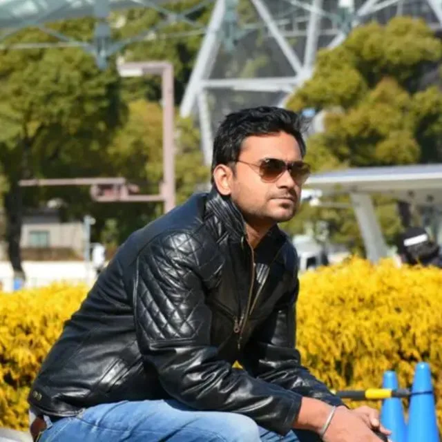
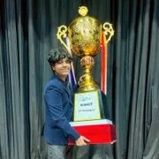
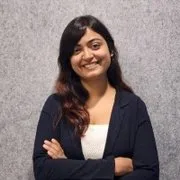
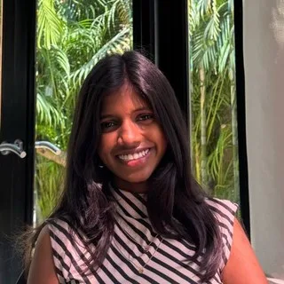
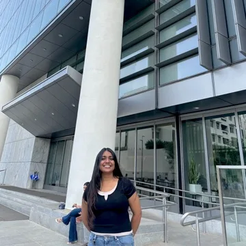
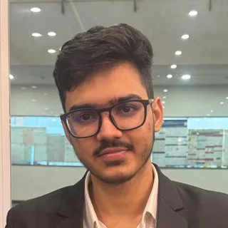
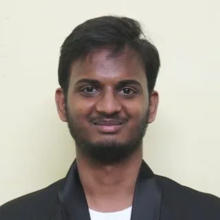
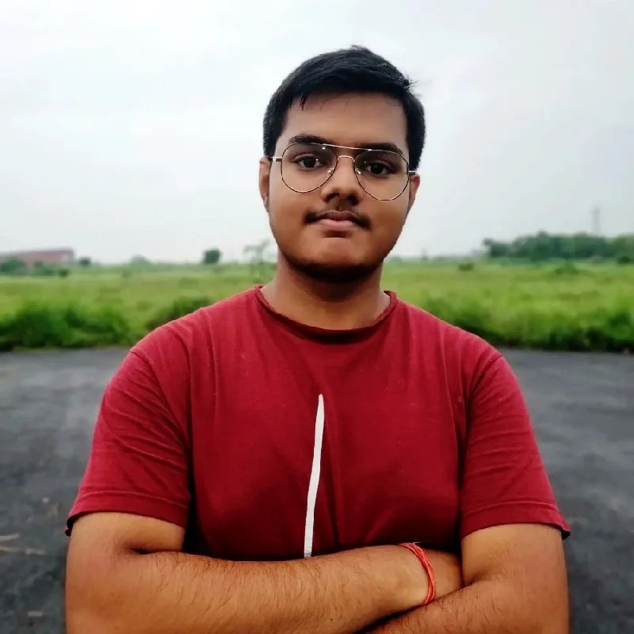
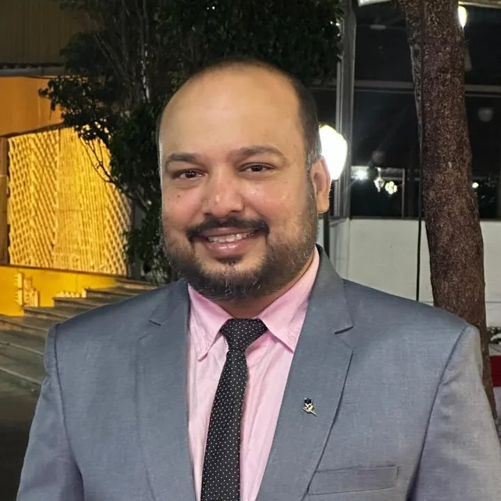

Independence OS
Independence OSRavinder Syal
Founder and CEO
Multi-time founder with 30 years in healthcare operations; scaled ventures before Independence OS and now builds AI to keep physicians independent.
Team
A talent-dense, high-agency group across the US and India: engineers, researchers and operators.
Schools
Companies
Research
4 people
Ravinder Syal
Founder and CEO
Multi-time founder with 30 years in healthcare operations; scaled ventures before Independence OS and now builds AI to keep physicians independent.
Dr. Ashu Syal
Physician and Medical Director
Pediatrician and the clinical anchor of our practices. Medical Director at Nag Clinics and Clinical Assistant Professor at Baylor College of Medicine and UTMB.

Rahul Bhardwaj
Chief Financial Officer
IIM Calcutta alumnus leading finance, acquisitions, clinic economics, and capital planning for the operator-plus-software model.
Pratham Singh
Chief of Staff
IIT Bombay operator coordinating CEO priorities, clinic operations, hiring, and product execution across the team.
4 people

Tasmay Pankaj Tibrewal
Models lead
IIT Kharagpur AI researcher and incoming MARS Fellow with CAISH / Redwood Research; leads the Models team across research, training, and evals.
Ankan Biswas
Models
IIT Kharagpur '23; ICLR/NeurIPS researcher; ex AI Research at Fractal and MIT; works on fine-tuning, distillation, and agentic frameworks.
Shubham Kulkarni
Models · ML
IIT Kharagpur ECE '24; Senior Data Scientist at MakeMyTrip on pricing, forecasting, and RL. Works on the ML side of Models: fine-tuning, distillation, and serving.
Animesh Raj
Models · Core AI
IIT Kharagpur AI researcher; two-time national hackathon winner and UN Millennium Fellow. Core AI intern on the Models team: evals, agents, and training.
6 people
Rushi Chavda
Head of Agents
IIT Bombay AI researcher with Harvard Research, IBM, and EY experience; leads the Agents team and builds Guardian.
Ajay Edupuganti
Agents co-lead · Clinics
IIT Madras builder with Lincecraft AI background; co-leads the Agents team and builds Clinics, the voice agent for the front desk.

Kirti Bagri
RCM
Founding AI engineer and IIT Delhi CSE grad; Oracle SDE-2 / Analytics background; leads RCM from claims to denials and appeals.

Rashmitha Pittala
Scribe
IIT Delhi CS '23 engineer building the AI that converts physician-patient conversations into structured notes, summaries, and billing codes.

Simran Bhagat
RCM
IIT Delhi engineer with Goldman Sachs and fintech-payments experience; works on RCM alongside Kirti, from claims to denials and appeals.

Yash Choudhary
Supply chain
IIT Bombay economics undergrad building the Supply chain agent: clinic inventory, ordering, and demand prediction across the operating network.
4 people

Charan Kumar
Head of Data
Amazon SDE II, ex-Flipkart, and IIT Bhubaneswar CS; leads the Data team, building the backend and data infrastructure that keeps the shared record reliable.
Nadeesh Garg
Foundry
Prophecy data engineer and IIT Delhi alum building scalable data products and infrastructure for the shared record under every agent.

Devansh Gupta
Data · backend
IIT Kharagpur EE and Platform Engineer at Iden; intern on the Data team, building backend services and pipelines for the shared record.

Madhur Goel
Foundry · platforms and infra
IIT Delhi systems engineer with 17+ years in latency-critical infrastructure and production ML pipelines. Builds the platforms that Foundry and every agent run on.
We are hiring across research, engineering, and operations, in the US, India, and France. If building the AI that runs a clinic, and carrying good healthcare to far more people, is the kind of problem you want to spend your time on, we would love to hear from you.